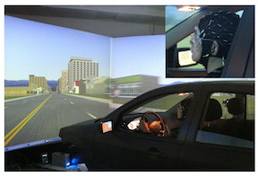
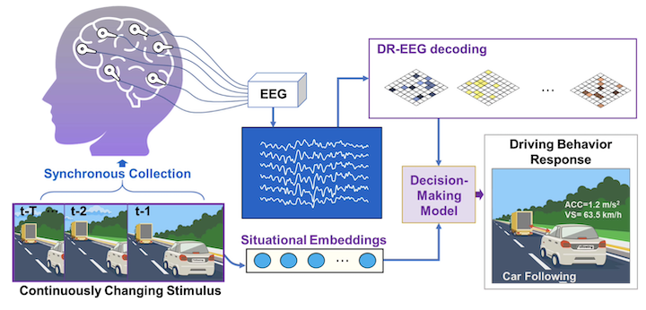

Brain-Driving: Electroencephalography (EEG) and Driving Simulator
Overview
Driving simulators and electroencephalography (EEG) offer a safe and controlled way to study how people drive and think. Simulators reproduce repeatable traffic scenarios, while EEG reveals the neural activity behind perception and decision-making. Together, they connect brain activity with observable driving behavior and support human-centered traffic safety and intelligent vehicle design.
We first examined the relationship between EEG features and ordinary driving behavior in simulator experiments, finding that beta-band activity was closely associated with speed, acceleration, and headway[1]. We then developed Brain Driving, combining driving-related EEG decoding with situational embeddings to predict personalized vehicle speed. Experiments with 133 participants demonstrated the potential of individualized models for brain–computer interaction and intelligent driving[2].
Video not playing? Watch it directly on YouTube or Bilibili.
Publications

